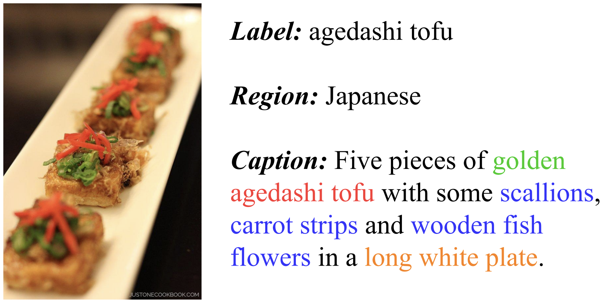
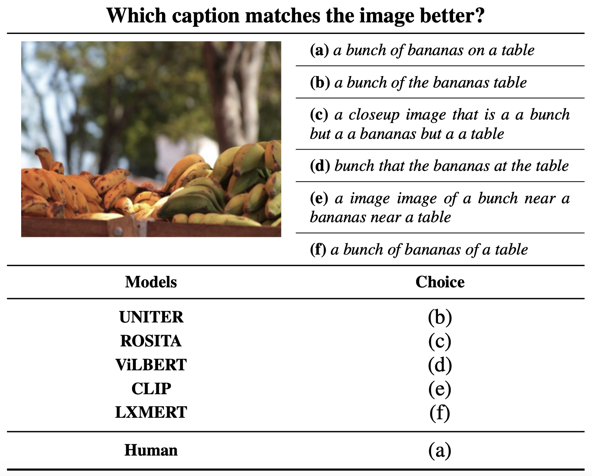
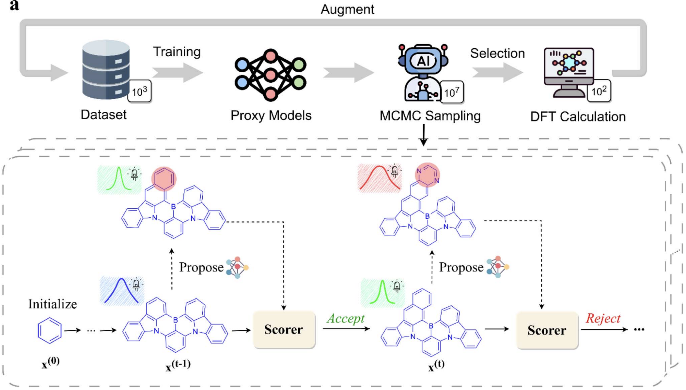
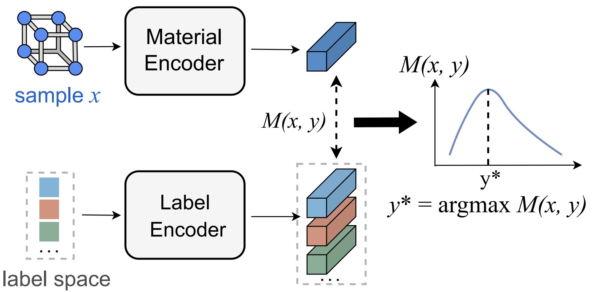

Experience
- 2024.9 - present: Ph.D., School of Artificial Intelligence, Nanjing University
- 2024.9 - 2025.10: Intern, Institute of AI Industry Research (AIR), Tsinghua University
- 2022.9 - 2024.6: M.S., School of Artificial Intelligence, Nanjing University
- 2018.9 - 2022.6: B.S., Brain Science and AI, Kuang Yaming Honors School, Nanjing University
Publications
Vision-Language Learning

Food-500 cap: A fine-grained food caption benchmark for evaluating vision-language models
ACM Multimedia, 2023
A new benchmark to measure fine-grained captioning and cross-modal understanding in food domain, enabling more faithful and diverse VLM generation.

Probing cross-modal semantics alignment capability from the textual perspective
Findings of EMNLP, 2022
A probing study revealing how well text-only analyses can diagnose cross-modal alignment in large-scale vision-language models.
AI for Science

Generative AI-powered inverse design for tailored narrowband molecular emitters
Digital Discovery, 2025
A generative pipeline for inverse design of molecular emitters with application-driven spectral properties, enabling rapid discovery cycles.

Towards Extrapolation in Deep Material Property Regression
AI4Mat Workshop @ ICLR 2025
Empirical and methodological insights on extrapolation for material property regressors with robust evaluation splits.